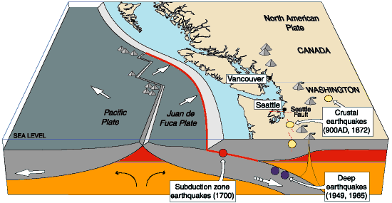
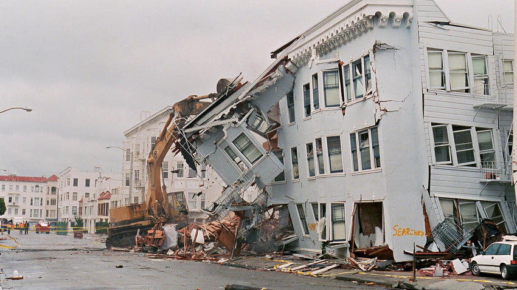
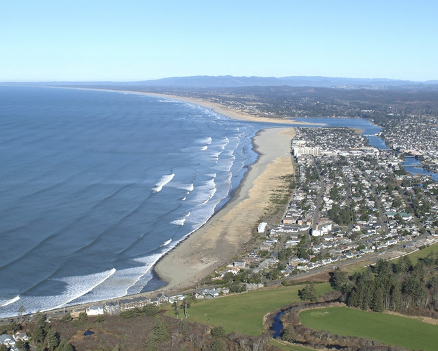
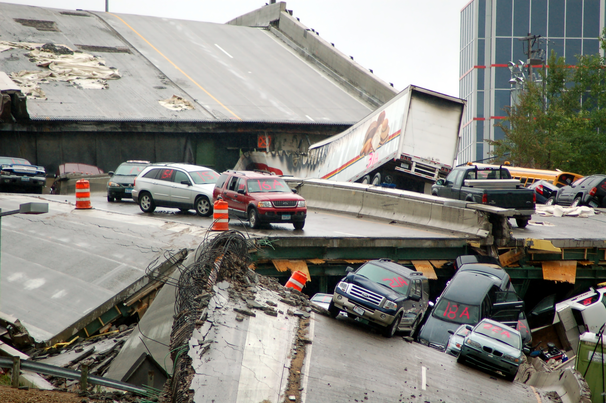
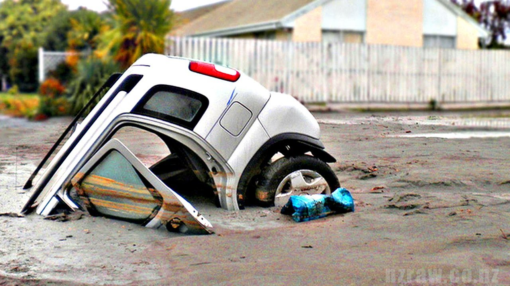
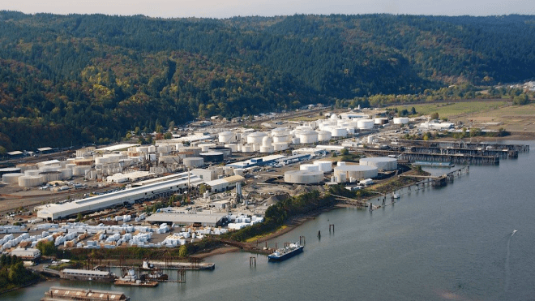

The Juan de Fuca plate of the Oregon coast under the northerly portion of the western side of the North American Plate at the Cascadia subduction zone. It is at the site of a convergent plate boundary that is poised to create a mega thrust earthquake of up to 9 on the Richter scale. femA projects that nearly thirteen thousand people will die in the Cascadia earthquake and tsunami


The resulting quake will have increasing severity the farther west you go in Oregon and will still do sizable damage when it reaches the Willamette valley.

The massive earthquake will also cause a massive tsunami that will fulling envelope parts of the Oregon coast in what is known as an induction zone that will devastate communities on the Oregon coast.

The earthquake will cause sizable damage to Oregon transportation infrastructure. In Oregon many of the bridges will collapse while others will be so heavily damaged they will not be able to be used with their on and off ramps damaged beyond repair.

In particular risk to the Willamette valley is the risk of soil liquefaction where a massive amount of the damage to the buildings that lie on top of them.

The Olympia pipeline which delivers a majority of the fuel for all of Oregon will be damaged in several places and will not be able to be used. Not only that but the state’s main oil reserve along the river was built under land that is extremely prone to soil liquefaction and will be destroyed. This problem will be exacerbated by several bridge collapses that will make bringing fuel in by river far more difficult. This combined with the damaged nature of the roads will no doubt cause massive fuel shortages following the earthquake.